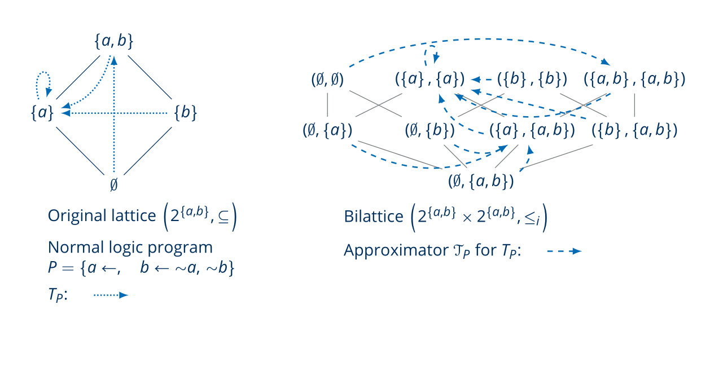

Scope & Description
Semantics of various formalisms in fields of artificial intelligence, such as knowledge representation, can be described by fixpoints of corresponding operators. For example, in many logics (e.g. propositional or modal logics) theories are fixpoints of the underlying consequence operator. Likewise, in logic programming, default logic, or formal argumentation, all the major semantics can be formulated as different types of fixpoints of the same operator. Such operators are often non-monotonic, and so their fixpoints cannot be guaranteed to exist, or be defined constructively. In order to deal with this illusive nature of the fixpoints, Denecker, Marek and Truszczyński introduced a method for approximating each value z of the underlying operator by a pair of elements (x, y). These elements represent lower and upper bounds on z, and so a corresponding approximation operator for the original, non-monotonic operator, is constructed. A natural requirement is that the approximating operator is precision-monotonic, intuitively meaning that more precise inputs of the operator give rise to more precise outputs. This requirement ensures (by Tarski and Knaster’s Fixpoint Theorem) that the approximating operator has fixpoints that can be constructively computed, and approximate the fixpoints of the approximated operator (whenever such fixpoints exist). Many existing formalisms in knowledge representation where shown to make implicit use of approximation fixpoint theory (e.g. logic programming, default logic, autoepistemic logic, abstract dialectical frameworks, hybrid MKNF, SCHACL, and active integrity constraints), and the semantics of several new formalisms were obtained by a straightforward application of approximation fixpoint theory (e.g. extensions of logic programs, weighted abstract dialectical frameworks (ADFs), access control policies and second-order logic extended with non-monotone inductive definitions).
The goal of this tutorial is to introduce approximation theory to the community of AI-researchers. The emphasis of this tutorial will be on the motivation and applications of approximation fixpoint theory. This emphasis will be achieved by a detailed study of some of the formalisms to which the application of approximation fixpoint theory has received, historically, the most attention, namely logic programming and (weighted) abstract dialectical frameworks In more detail, we will use this formalisms to highlight the challenges that occur when developing a semantics for a KR-language, and how approximation fixpoint theory allows to surmount this challenges. In doing so, we will organically pass along the main AFT-based semantics (e.g. the stable, well-founded and Kripke-Kleene semantics) and constructive techniques for obtaining approximation operators (e.g. the trivial and ultimate approximation operator).
Potential target audience, prerequisite knowledge, and learning goals
The tutorial is open for any researcher in knowledge representation, regardless of whether they have a background in knowledge representation or algebra. All necessary mathematical background will be introduced in the tutorial, as well as formalisms from knowledge representation that serve as guiding example, such as logic programming.
The goal of the tutorial is to introduce the basic ideas underlying approximation fixpoint theory as a tool for the definition and study of semantics of knowledge representation formalisms, as well asthe language-independent study of concepts in knowledge representation. The learning outcomes of this tutorial are the following:
- Understand the role of operators and fixpoints in knowledge representation.
- Understand the concept of an approximation in knowledge representation, and its connection with three-and four-valued logics.
- Understand the idea of an approximation of a potentially non-monotonic operator, and how this allows to approximate fixpoints of the original operator.
- Understand how the stable approximator is constructed, and how this allows to define the well-founded fixpoint.
- Realize the benefit of the algebraic approach to knowledge representation underlying approximation fixpoint theory, and how this allows to give a language-independent account of important concepts occurring in different sub-fields of knowledge representation.
Tutorial Outline
The tutorial will take place over two 1:45 hour slots and has the following contents:
- Motivation and history: a guided tour through the history of logic programming
- Syntax of normal logic programs.
- First semantics: completion, minimal and perfect models.
- Well-founded and stable semantics, immediate consequence operator.
- Four-valued interpretations and approximation operators.
- Stable approximations.
- Extending logic programming syntax: aggregates.
- An abstract view: from logic programming to (general) AFT
- Lattices, complete lattices and operators.
- Fixpoints of operators and (Knaster and) Tarski’s fixpoint theorem.
- Bilattices and approximation operators, Kripke-Kleene semantics.
- Stable operators and well-founded semantics.
- Ultimate approximations.
- A second application: weighted abstract dialectical frameworks
- Boolean ADF
- Weighted ADFs
- Algebraically Developed Concepts
- Modularity
- Groundedness
- Complexity
Course Material
The course material, in the form of slides, is available online.KR 2024 Tutorial
This workshop is part of the workshop and tutorial programme of the 21st International Conference on Principles of Knowledge Representation and Reasoning (KR2024).Course Lecturers
|
Hannes Straß TU Dresden, Germany
Hannes Straß is a research associate at the Computational Logic Group. He received his PhD and habilitation both from Leipzig University in 2012 and 2017, respectively. His habilitation thesis is titled “Abstract Dialectical Frameworks. An Analysis of their Properties and Role in Knowledge Representation and Reasoning”. His PhD thesis “Default Reasoning about Actions” was supervised by Prof. Michael Thielscher and Prof. Gerhard Brewka. |
|
|
Jesse Heyninck Open Universiteit, the Netherlands
Jesse Heyninck has completed his PhD in Philosophy at the Faculty of Philosophy and Educational Sciences at the Ruhr University in Bochum, Germany. He is currently an assistant professor in computer science at the Open Universiteit Heerlen, the Netherlands and an honorary research associate at the Department of Computer Science at the University of Cape Town. |